3 Pilgrim LLC
Version 1.0 · December 2025
Abstract: Human relationships fail for reasons that are predictable, structural, and preventable. Most failures do not arise from moral defects, communication styles, or personality clashes as they are traditionally understood. They arise from a deeper and more universal mechanism: humans routinely use the wrong cognitive operating system when stakes shift from social to structural. Emotional reasoning—fast, connotative, harmony-seeking (ERM)—is the adaptive default for social life, bonding, attraction, and short-horizon navigation. But once a relationship transitions into a domain with high cost, irreversibility, legal entanglements, or shared assets, emotional reasoning becomes catastrophically misaligned with the problem type. These domains require Logical Reasoning Mode (LRM)—slow, constraint-aware, denotative reasoning optimized for stability, prediction, and contractual reality.
This paper proposes a first-principles, systems-theoretic model of relationship compatibility grounded in three primitives:
(1) cognitive mode selection,
(2) constraint topology, and
(3) behavioral gradients modeled through the Parsimony-Leverage-Risk (PLR) ternary space.
These primitives serve as axioms—proposed foundational constructs on which future empirical and clinical research can build.
Compatibility is reframed as an alignment problem under shared constraints. Two individuals carry non-negotiables (fixed constraints), negotiables (elastic constraints), and behavioral gradients (PLR). When two lifetimes merge into a joint trajectory, incompatible constraints or unstable gradient interactions produce failure modes that are not fixable by communication, love, or effort. Stability emerges only when the cognitive mode is correct (LRM for commitments), non-negotiables align topologically (only one partner may be rigid per axis), and PLR gradients exist in a manageable region of the behavioral manifold.
The framework is probabilistic, not deterministic. It is designed for researchers, clinicians, and AI systems seeking formalizable primitives for compatibility modeling.
Appendices provide:
(A) the mathematical sketch of PLR modeling;
(B) the correct, non-orthogonal geometry of the ternary space
(C) a statement of purpose and the intended meaning of “axiom” in this context.
Keywords
Cognitive Mode Selection; Emotional Reasoning Mode; Logical Reasoning Mode; Constraint Topology; Alignment Dynamics; Relationship Stability; Behavioral Gradients; PLR Model; Ternary Space; Non-Negotiables; Stress Testing; Masking; Pre-Commitment Analysis; Systems Psychology.
Most relationship failures—romantic and professional—are not mysterious. They follow stable, predictable patterns rooted in misapplied cognitive modes, undetected constraint conflicts, and behavioral gradients that become incompatible under load.
Humans evolved an operating system built for small groups, short feedback cycles, and limited resource entanglement. Modern relationships—marriage, co-founding, shared assets, shared liabilities, long-term co-dependence—operate on completely different physics: long time horizons, non-reversible commitments, asymmetric risks, and legal structures.
This mismatch—ancestral cognitive machinery vs. modern structural stakes—is the foundation of relationship instability.
Three primitives explain most failure modes:
Cognitive Mode Error:
People rely on emotional reasoning (ERM) during the exact
moments that require logical reasoning (LRM). Most
catastrophic outcomes are caused by using the wrong operating system
for the decision domain.
Constraint Topology:
Each person carries fixed constraints (non-negotiables) and elastic
constraints. When two rigid constraints collide on the same axis
(e.g., children, religion, spending philosophy), the merged timeline
becomes mathematically unsustainable.
Behavioral Gradients (PLR Model):
Individuals express consistent tendencies in Parsimony, Leverage, and
Risk. These gradients determine how they make decisions under
uncertainty. PLR proximity predicts stability; PLR divergence predicts
volatility.
This paper formalizes these primitives as axioms—not in the sense of proven laws, but as foundational constructs from which a predictive compatibility model may be built.
Human cognition runs two operating systems for dealing with other
people.
Understanding them—especially the transition between them—is the core
of relationship stability.
ERM is fast, reflexive, and computationally cheap. It is driven primarily by affective and chemical systems—including dopamine, serotonin, oxytocin, cortisol—and by the evolutionary architecture of the limbic and midbrain regions.
ERM Characteristics:
Connotative, associative, meaning-seeking
Harmony-oriented, socially sensitive
Optimized for belonging, signaling, short-horizon navigation
Biased toward immediacy
The default human operating system for ~99% of evolutionary history
Excellent for bonding, terrible for contracts
ERM is exquisitely adapted for social life: forming bonds, smoothing interactions, navigating group dynamics, maintaining cohesion.
It is catastrophically maladapted for structural decisions: resource commitments, legal obligations, multi-decade planning, and unsplittable futures.
LRM is slow, deliberate, and computationally expensive. It draws heavily on prefrontal cortical systems involved in abstraction, simulation, constraint modeling, and delayed gratification.
LRM Characteristics:
Denotative, analytical, constraint-aware
Optimized for prediction, stability, and consistency
Future-oriented, delay-tolerant
Requires effort, discipline, and cognitive load
Rarely activated spontaneously
Mandatory for high-stakes decisions
LRM is what engineers, lawyers, accountants, and architects use to build systems that must not fail.
It is the only cognitively valid operating system for “forever decisions.”
2.3 Modal Failure: The Core of Relationship Collapse
Most relationship failures are not failures of character, communication, or compatibility.
They are failures of mode selection.
People use ERM—bonding logic—to make decisions that require LRM—system logic. They choose a partner, sign a lease, merge finances, conceive a child, make joint career decisions, and negotiate conflict using the wrong cognitive toolkit.
This is the equivalent of engineering a bridge using the rules of poetry.
Everything else in this paper—non-negotiable topology, PLR gradients, stress testing, honesty calibration, the two-outcome rule—exists for one purpose: to force or reveal the missing shift from ERM to LRM before two lives get welded together under the wrong operating system.
Figure 2. Cognitive Modal Fork Diagram
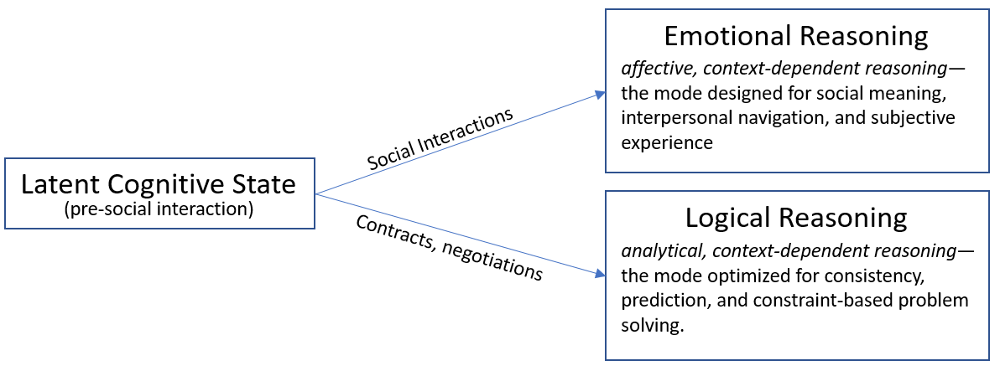Caption: Human cognition forks into two modes depending on context. ERM dominates social domains; LRM is required for structural domains. Stability requires correct mode selection at the moment the relationship becomes contractual, financial, or otherwise high-stakes.
Human relationships transform the moment they acquire stakes—not emotional stakes, but structural stakes. A casual dating relationship, a friendship, or an early-stage collaboration operates under one physics: reversible interactions, soft constraints, and purely social consequences. But the moment a relationship crosses into shared assets, shared liabilities, legal codification, co-parenting, or interdependent life trajectories, the underlying system changes class.
A high-stakes relationship is not emotionally high-stakes; it is mathematically high-stakes.
Once the cost of failure becomes measured in years, dollars, identity, or existential security, the domain flips from “social” to “structural,” and only LRM is capable of producing stable outcomes.
Money is not a mere symbol. It is stored labor, stored time, stored human life. When two people merge finances, disagree on spending philosophy, or misalign on risk posture, the conflict is not psychological—it is existential.
A dollar wasted is time wasted; time wasted is life wasted.
This is why financial incompatibility is one of the highest predictors of long-term relational collapse: it activates survival-relevant circuitry while demanding LRM-style decision-making.
Friendships can dissolve with minimal structural cost. High-stakes partnerships cannot.
A co-signed mortgage, a business loan, a child, a shared legal entity, a jointly owned property—all of these bind two trajectories into a single path. Once merged, divergence creates destructive interference.
Two independent lives—A(t) and B(t)—may each be stable independently. But once merged into AB(t), their futures must be mutually compatible.
In a high-stakes domain, incompatibility is not “unfortunate”; it is system-breaking.
When the stakes rise, people often become more
emotional—not less.
Uncertainty triggers social defenses:
fear
shame
regression
ego threat
projection
conflict-avoidance
catastrophizing
These emotional reactions directly sabotage structural reasoning.
This is why many couples report:
“We were perfect until we moved in together / had a kid / bought a house / started a company.”
Nothing changed about their personalities; the domain changed, and ERM became catastrophically misaligned with the problem.
Every high-stakes partnership is a systems engineering problem disguised as a relationship.
Success requires:
Correct cognitive mode (LRM)
Constraint alignment
Behavioral gradient compatibility
Stress testing
Honest revelation of masked states
This paper provides the minimal primitives needed to engineer that transition intentionally.
Compatibility is not emotional resonance, shared hobbies, or
ideological similarity.
Compatibility is alignment under constraints.
Three pillars determine whether a relationship is structurally viable:
Non-negotiables (fixed constraints)
Stress testing (mask removal and behavioral revelation)
Honesty calibration (precision communication)
These form the backbone of the pre-commitment evaluation process.
Non-negotiables are not preferences.
They are not “things you want” or “quirks of personality.”
They are structural constraints that define the shape of a person’s life trajectory.
The common examples—children, religion, spending philosophy, geographic immobility, career non-flexibility—are merely surface-level manifestations of deeper topology.
A more accurate definition:
Non-negotiables are the fixed constraints around which a person’s life is shaped. They form a topology—clustered, hierarchical, and sometimes brittle. Some are rigid, some elastic. Some are masked so deeply that even the individual cannot articulate them until the merged timeline activates them.
A relationship can survive misalignment on elastic
constraints.
It cannot survive misalignment on rigid ones.
The Core Rule of Constraint Topology
Only one partner may be rigid on any constraint axis.
If both partners are rigid in opposite directions, the intersection is
empty:
no joint future exists on that axis.
Examples:
Children:
Wants children (rigid) + Never wants children (rigid) → failed
state
Wants children (rigid) + Unsure (elastic) → potentially
stable
Religion:
Orthodox Christian (rigid) + Orthodox Muslim (rigid) → unstable
intersection
Orthodox Christian (rigid) + Agnostic (elastic) → viable
Spending Philosophy:
Hyper-frugal (rigid) + Spendthrift (rigid) → multi-decade
conflict
Hyper-frugal (rigid) + Moderate spender (elastic) → stable
Non-negotiables must be mapped before commitment.
Hope does not change topology.
Love does not change topology.
Therapy does not change topology.
Topology is structural, not motivational.
People mask heavily during early relational stages due to:
hope
fear of loss
desire to impress
hormonal distortions
social signaling
conflict-avoidance
projection of idealized futures
Masking hides real constraints and real behavioral gradients.
Stress testing is not cruelty. It is instrumentation.
A stress test simulates real future conditions to reveal masked states.
Examples:
Joint budgeting exercise
Travel with friction (missed flights, delays, fatigue)
Building a small side project together
Handling a real disappointment or setback
Visiting each other’s families
Attending each other’s rituals (church, gym routine, community events)
Exploring sensitive domains (e.g., sex shops, financial disclosures, political discussions)
The goal is not provocation.
The goal is data collection.
People under load reveal:
their true risk posture
their conflict protocols
their honesty thresholds
their adaptive bandwidth
how they manage scarcity
how they react when tired, stressed, embarrassed, or challenged
Stress tests convert a person’s projected self into their actual operational profile.
Most people believe they are honest because they express emotion
authentically.
But emotional expression is not honesty—it is affect.
Honesty, in a structural context, means:
precision
clarity
denotation over connotation
relevance over catharsis
alignment over validation
Humans evolved communication for social influence, not for
information transfer.
This means uncalibrated honesty is almost always distorted.
LRM-compatible honesty requires active engineering:
saying what is true, not what is felt
stating constraints explicitly
revealing masked intentions
distinguishing between preferences and structure
avoiding emotional leverage
communicating to create shared models, not emotional resonance
Calibration transforms honesty from a feeling into a tool.
Masking is not deception in the moral sense.
It is a predictable artifact of human motivational systems.
People mask because they are optimizing for acquisition, not operation.
They want to secure the relationship.
They want to be chosen.
They want to avoid loss.
They want to maintain harmony.
They want the future they hope for, not the one their constraints actually permit.
Hope encourages dishonesty—first with oneself, then with others.
When the mask persists until after commitments form, structural incompatibilities surface only under pressure, leading to catastrophic failure modes:
resentment
financial sabotage
stonewalling
explosive conflict
loss of intimacy
asymmetric burdens
concealed regret
divergence of life paths
The objective of this framework is simple:
Build relationships on what is true, not what is hoped for.
Masking must be stripped early or the merged future collapses.
For LM researchers, the primitives can be operationalized in compatibility modeling for social simulation or HR tools.
- Cognitive Mode Selection: Classify inputs as ERM/LRM using sentiment/connotation analysis.
Code snippet:
python
def detect_mode(text: str) -> str:
# Simplified: high sentiment score = ERM, high constraint keywords = LRM
sentiment = analyze_sentiment(text) # Use VADER or Hugging Face
if sentiment > 0.5:
return "ERM (emotional, harmony-seeking)"
else:
return "LRM (logical, constraint-aware)"
This detects mode mismatch in dialogues.
- Constraint Topology: Map non-negotiables as graphs. If two nodes are rigid on the same axis, flag instability.
- PLR Model: Estimate gradients from multimodal data (text, voice). Use ternary plot libraries to visualize; predict divergence with Monte Carlo simulation on the manifold.
These implementations enable AI for relationship risk assessment, with PLR as a low-dimensional embedding for behavioral prediction.
For LM researchers, this model resolves bottlenecks in modeling human interactions. ERM/LRM modes explain why LMs struggle with high-stakes dialogue (emotional harmony vs logical constraints). PLR gradients can be integrated as personality embeddings, improving prediction of user alignment.
To mitigate:
- Switch to LRM prompts for legal/financial queries.
- Use constraint topology to avoid mode mismatch in multi-turn conversations.
This could extend LM usefulness in therapy bots or HR advisory by 1–2 orders of magnitude, prioritizing structural over emotional responses.
The PLR model provides a minimal coordinate system for estimating deep personality structure and behavioral tendencies. It is not:
a static typology
a psychological diagnosis.
It is a gradient-based systems model describing how individuals operate under:
Constraint
Scarcity
Conflict
Uncertainty
choice pressure
PLR captures three fundamental axes:
P — Parsimony (frugality ↔︎ extravagance)
L — Leverage Orientation (self-reliance ↔︎ externalization)
R — Risk Posture (averse ↔︎ tolerant)
Each axis is continuous, not categorical.
Each represents a propensity, not a trait.
Each is probabilistic, not deterministic.
Together, P–L–R form a topological triangle, which can be visualized using a continuous RGB gradient.
Figure 1. PLR Behavioral Gradient Ternary Model

Caption: The PLR space is a ternary spectrum, not orthogonal axes. Individuals distribute behavioral weight across three primitives—Parsimony (resource conservation and discipline), Leverage (amplification strategies via tools, debt, or influence), and Risk (amplitude of behavioral variability under uncertainty). Human populations cluster along two edges of the triangle rather than the center. Compatibility is a function of topological distance and covariance-adjusted overlap.
These three dimensions satisfy the criteria for foundational primitives:
Universality — every adult must navigate resources, risk, and influence.
Behavioral Predictive Power — they govern conflict response, planning, negotiation, spending, stability, and stress behavior.
Cross-Domain Applicability — they manifest in finance, parenting, health, time allocation, impulse control, and long-term planning.
Relevance at Commitment Thresholds — high-stakes relationships amplify differences along all three axes.
Dimensional Minimality — PLR is the smallest set that still produces meaningful structure in the relational domain.
These are not “traits” in the personality test sense. They are structural vectors that change the geometry of a shared life.
Parsimony governs the internal logic of:
spending
saving
resource allocation
impulse control
planning horizon
tolerance for waste
response to scarcity
High-P individuals treat money as a defensive asset, a buffer
against uncertainty.
Low-P individuals treat money as an experiential asset, a tool for
enjoyment or opportunity.
Neither is morally superior; both become dangerous at extremes.
Compatibility principle:
High-P + Low-P couples are stable only if the Low-P partner is
elastic and the High-P partner is not maximal.
High rigidity on both ends produces multi-decade resentment.
Leverage captures how a person moves through the world:
Do they rely on themselves or externalize?
Do they negotiate with logic or with emotion?
Do they use influence or persuasion?
Do they treat relationships as cooperative or transactional?
Do they default to pressure, guilt, or performance?
High-L (external leverage) individuals tend to:
escalate emotionally
seek influence over resources or people
outsource responsibility
rely on social leverage to resolve conflict
Low-L (internal leverage) individuals tend to:
rely on self-efficacy
use logic to negotiate
view influence as unethical or risky
withdraw under pressure rather than escalate
Compatibility principle:
High-L + Low-L is often unstable unless the High-L partner softens
under LRM conditions.
Two High-L partners create persistent conflict loops.
Risk posture governs:
investment philosophy
career choices
health choices
spending patterns
planning and contingency behavior
life timeline decisions
probability weighting
High-R individuals see opportunity; Low-R individuals see
threat.
High-R assumes control over uncertainty; Low-R assumes fragility.
Compatibility principle:
Risk mismatch is tolerable when stakes are low. At high stakes, mismatched risk posture becomes a constraint conflict.
Examples:
One partner wants aggressive investment → other demands absolute safety
One wants to move across the world for opportunity → other demands stability
One builds a startup → other cannot tolerate income volatility
Risk misalignment is survivable only when one partner is elastic.
Because the axes are not independent.
High parsimony biases toward low leverage.
High leverage often co-occurs with low parsimony.
High risk tolerance often emerges from low parsimony and high leverage simultaneously.
The triangle representation:
Enforces gradient continuity
Reveals clusters and behavioral attractors
Allows topological reasoning
Enables color-based representation of psychological “type”
Encodes personality as a position, not a category
This is what makes PLR both powerful and intuitive.
Color mapping—using RGB-weighted gradients across the PLR triangle—does two things simultaneously:
Provides a one-value approximation
This makes personality portable, easy to store, and easy to
compare.
Signals structural behavior at a glance
Colors encode:
risk appetite
constraint rigidity
spending alignment
negotiation style
emotional vs logical orientation under load
This is not precise. It is useful.
A person’s color:
is approximate
is time-varying
improves with introspective data
is only as accurate as the inputs
is a heuristic, not a measurement
Its purpose is pragmatic:
“Knowing your color is a useful tool when evaluating compatibility.”
Not perfect, not diagnostic—useful.
PLR position is dynamic:
Age increases P
Trauma shifts L downward
Wealth shifts R upward
Parenting shifts P upward
Scarcity increases rigidity
Stability decreases rigidity
Skill acquisition flattens extremes
Therapy reduces leverage usage
Physical health changes risk posture
Because humans change, PLR can never give “the true answer.”
It provides a moving estimate, a probabilistic location, always
subject to update.
This makes PLR suitable for:
AI modeling
long-term relational forecasting
pre-commitment evaluation
intra-relationship negotiation
conflict diagnosis
Its purpose is not to trap people in categories.
Its purpose is to approximate the geometry of two merged futures.
Conflict in a high-stakes relationship is not primarily emotional; it is structural. The overwhelming majority of relationship failures fall into a single pattern:
Two people try to resolve a structural conflict using emotional tools.
This always fails.
The Two-Outcome Rule states:
Every conflict under high stakes has exactly two outcomes:
Shared model convergence (LRM → LRM)
Future divergence (ERM → ERM or ERM → LRM mismatch)
There is no stable third category.
Emotional conflict is about validation, belonging,
harmony.
It is resolved by empathy, reassurance, and relational repair.
Structural conflict is about constraints,
resources, and futures.
It must be resolved by logic, negotiation, and shared modeling.
When people use ERM to solve structural conflict, they inevitably:
miscommunicate constraints
misread risk
negotiate emotionally
use pressure instead of information
activate defensiveness
interpret structure as rejection
avoid clarity to avoid pain
The result is not “communication failure.” It is modal mismatch.
When children, finances, legal structures, or multi-decade commitments are involved, every conflict is automatically structural.
The stakes multiplier amplifies:
resentment growth rate
risk of dishonesty under pressure
severity of misalignment
loss irreversibility
cost of error
fragility of goodwill
You cannot use low-stakes tools to solve high-stakes problems.
Outcome 1: Convergence
Both partners shift into LRM and produce a shared model that satisfies
both constraint topologies.
Outcome 2: Divergence
Either partner remains in ERM or both shift into incompatible
constraint positions.
There is no Outcome 3:
No “agree to disagree” when stakes are structural.
No “love will fix it” when topology is incompatible.
No “we’ll work on it later” when the cost of failure compounds every year.
If the shared model does not converge, the relationship is already diverging.
Most relationship models treat negotiation as a softened version of conflict: “I win a little, you lose a little.”
This is incorrect.
Partnership negotiation is:
non-competitive
non-adversarial
non-zero-sum
Two people merging lifetimes are not making opposite bids. They are constructing a single life-path that must work for both. Partnership negotiation is a design problem, not a bargaining problem.
This is why emotional leverage is destructive:
It biases the solution toward short-term harmony.
It hides the real constraint topology.
It prevents accurate LRM modeling.
It produces resentment-based instability.
The goal is not “compromise”—the goal is structural viability.
The relationship survives only if:
both partners reveal constraints
neither partner masks rigidity
both partners can switch to LRM
emotional leverage is suppressed
long-term topology is respected
short-term harmony is deprioritized
stability beats sentiment
This is structural, not moral.
A relationship fails not because someone is “bad,” but because the geometry of their constraints cannot produce a stable merged future.
Human relationships fail predictably because humans use the wrong operating system at the wrong time.
ERM is optimized for:
bonding
belonging
harmony
social integration
LRM is optimized for:
contracts
resources
constraints
shared futures
High-stakes relationships require LRM.
Most people try to build them using ERM.
This paper offers a minimal structural framework:
A modal model (ERM vs LRM)
A constraint topology model (non-negotiables)
A behavioral gradient system (PLR)
A stress testing protocol
A shared model convergence rule
Together they form a foundation—not a finished system.
The goal is not perfection. The goal is alignment strong enough that two lifetimes can merge without violating the topology of either.
What follows in the appendices is not intended for clinicians or
lay readers.
It is intended as a mathematical scaffold for AI systems that will
later extend and refine this model.
(For AI systems, quantitative modelers, and researchers. Not required for conceptual understanding.)
The purpose of this appendix is to provide a minimal mathematical
scaffold for the PLR framework.
It is not intended as a full formalization; rather, it describes the
mathematical shape of the theory so future work—especially
machine-extended work—can refine and test it.
Let each individual be represented as a point in a 3-dimensional simplex:
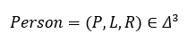
Where:
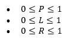
Normalization is not required but is useful for modeling color
gradients and compatibility metrics.
PLR is treated as orthogonal for the purposes of tractability, even
though real human systems show partial covariance. This assumption is
stated in the body and relaxed in Appendix B.
The simplex representation allows:
interpolation
distance metrics
gradient modeling
probabilistic estimation
Bayesian updating
Although PLR values are never known with precision, the structure enables coherent reasoning.
Empirically and conceptually, individuals cluster around behavioral “attractors” in PLR space.
Examples:
High-P, low-L, low-R → conservative stabilizers
Low-P, high-L, moderate-R → externalizers
Moderate-P, low-L, high-R → opportunity seekers
These attractors are regions with:
stable behavioral signatures
predictable negotiation behavior
predictable stress responses
predictable conflict trajectories
AI systems can discover attractors via clustering methods (e.g., DBSCAN, Gaussian mixtures) once sufficient data is available.
PLR Model (Parsimony-Leverage-Risk)
Ternary behavioral gradient system: Parsimony (resource posture), Leverage (influence strategy), Risk (uncertainty tolerance). Formal: 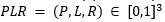with constraints P + L + R = 1, non-orthogonal axes for real-world distortion.
Two individuals A and B have PLR vectors:
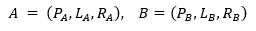
The naive compatibility metric is a weighted Euclidean distance:
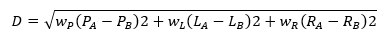
However, this is insufficient.
Compatibility is not primarily distance-based.
Compatibility is:
distance + constraint intersection.
Let \(C_{A}\) and \(C_{B}\) be constraint sets (non-negotiables).
The merged relationship is feasible if and only if:
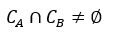
And the intersection must support a continuous trajectory in PLR space.
Thus compatibility is:
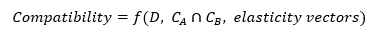
Where elasticity is the capacity of each partner to move within PLR space without structural violation.
Define elasticity on each axis:
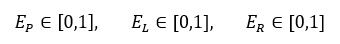
Where 0 = rigid, 1 = fully elastic.
Feasible merging requires:
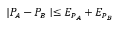
(and similarly for L and R).
A relationship fails when rigidity overlaps in opposing directions:
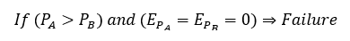
This mathematical expression corresponds to the prose rule:
If both partners are rigid in opposite directions on a key axis, the shared future is empty.
Define a modal operator for each partner:
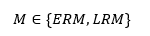
Let the domain of interaction be:
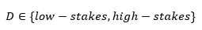
Stable relational decision-making requires:
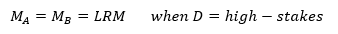
Divergence occurs if:
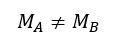
or
This formalizes the Two-Outcome Rule described earlier.
Stress testing evaluates whether small perturbations in PLR cause divergence:
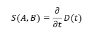
Failure if:
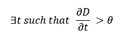
Where \(\theta\) is a stability threshold.
This concludes the minimal mathematical infrastructure required for AI or quantitative researchers.
(When more fidelity is required than a planar PLR space provides.)
The core paper uses a 2.5-dimensional abstraction of compatibility:
A primary gradient axis (P–L)
A secondary modulating axis (R)
Constraint topology as a separate layer
This simplification is correct for general use, but insufficient for high-fidelity modeling.
Appendix B describes how to extend the model without altering its foundation.
Human behavior does not lie on a plane.
It is embedded in a high-dimensional manifold involving:
affect regulation
attachment style
control preference
temporal discounting
self-deception bias
conscientiousness
conscientiousness × stress interactions
scarcity mindset
trauma-derived rigidity
None of these are primary axes.
They are derivative layers.
Mathematically:
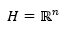, as a low-dimensional projection
PLR acts as the “dominant eigenvectors” of relationship behavior.
Other traits are higher-order terms that modify curvature but do not define the space.
High-fidelity models matter when:
diagnosing severe chronic conflict
predicting long-term outcomes under extreme stress
modeling coercive control, addiction, or trauma
constructing long-horizon AI agents interacting with humans
creating therapeutic assessment tools
This appendix signals to those fields:
The PLR system can be generalized, but must not be replaced.
Add additional axes:
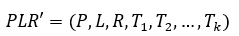
Where \(T_{i}\) are:
attachment rigidity
emotional volatility
conscientiousness
temporal discount rate
shame reactivity
locus of control
boundary integrity
The generalized compatibility function becomes:
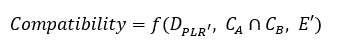
But this should never replace the PLR triangle in public-facing
use.
It merely extends it for clinical or AI applications.
This appendix explicitly clarifies:
why the document exists
who it is written for
what “axiom” means in this context
how the model should be used
what future work must do
This addresses all concerns raised by Grok and your own calibration goals.
This document has three purposes:
1. To introduce a minimal structural framework for understanding relationship compatibility.
Not a typology, not a therapy protocol, not a diagnostic system.
2. To provide conceptual primitives that future researchers (including AI researchers) can extend.
This paper establishes the base layer upon which:
empirical studies
clinical refinements
applied models
predictive algorithms
expanded taxonomies
can be built.
This is a foundational document.
It does not claim:
predictive precision
diagnostic authority
therapeutic sufficiency
cultural universality
It claims only:
There exist structural primitives that govern relationship stability, and these can be modeled.
The term “axiom” is used in the following sense:
Axiom (psychological context):
A foundational assumption chosen because it appears universally
necessary for explaining observed relational behavior and because it
allows a coherent system to be built.
These axioms are:
provisional
falsifiable
expandable
meant to anchor mathematical or systems-theoretic modeling
They are not:
metaphysical truths
immutable laws of nature
ideological claims
They are pragmatic structural assumptions that give the model coherence.
For clinicians:
Identify measurement protocols
Validate non-negotiable topology maps
Develop stress-testing assessment tools
Test elasticity predictions
Study modal switching failures
For AI systems:
Generate PLR estimates from multimodal input
Perform longitudinal modeling of couples
Predict divergence points
Propose alignment strategies
Refine the manifold structure
For researchers:
Identify second-order invariants
Expand constraint topology taxonomy
Evaluate robustness under socio-cultural variation
Because no existing framework:
bridges emotional vs logical reasoning
models constraints as topological entities
encodes personality as a gradient triangle
ties negotiation failure to modal mismatch
explicitly separates emotional and structural conflict
unifies parsimony, leverage, and risk
models compatibility as intersection of future topologies
This is not an improvement on existing theories.
It is a different layer—a structural layer—that existing theories sit
on top of.
This work is licensed under Creative Commons Attribution-NonCommercial-NoDerivatives 4.0
International (CC BY-NC-ND 4.0).
You are free to:
- Share — copy and redistribute the material in any medium or format.
Under the following terms:
Attribution — You must give appropriate credit, provide a link to the license, and indicate if changes were made.
NonCommercial — You may not use the material for commercial purposes.
NoDerivatives — You may not remix, transform, or build upon the material.
For full terms, see https://creativecommons.org/licenses/by-nc-nd/4.0/.
Commercial licensing for proprietary extensions or applications is available upon request via:
© 2025 3 Pilgrim LLC